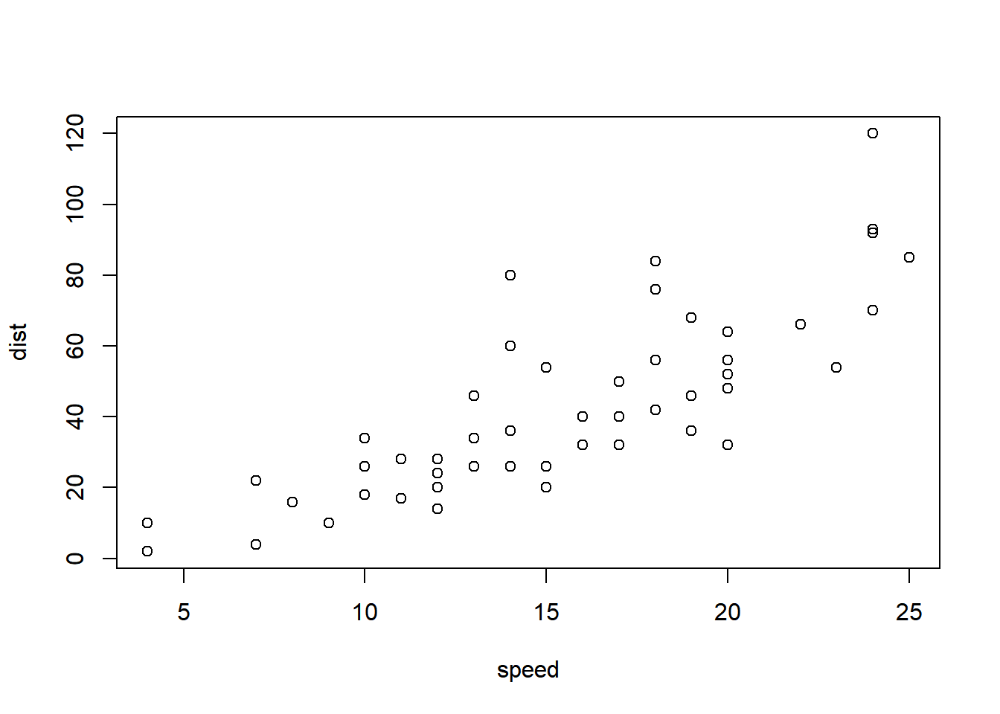

h2 {
color: #5e00ff;
font-family: "Times New Roman", Times, serif;
text-align: center;
}
figcaption {
font-size: 0.8em;
text-align: center;
}
.meuechart {
width: 50%;
margin: auto;
}HTML customizado
Capítulo muito legal
No Capítulo 2, temos a conclusão.
No Capítulo da minha conclusão 2, temos a conclusão
Segunda seção
Se você olhar o gráfico de Figura 1.1, verá que é muito legal.
plot(cars)
Terceira seção
Se você olhar a tabela de Tabela 1.1, verá que não é tão legal. Isso é parecido com o que vimos na Seção 1.1.
knitr::kable(head(iris))| Sepal.Length | Sepal.Width | Petal.Length | Petal.Width | Species |
|---|---|---|---|---|
| 5.1 | 3.5 | 1.4 | 0.2 | setosa |
| 4.9 | 3.0 | 1.4 | 0.2 | setosa |
| 4.7 | 3.2 | 1.3 | 0.2 | setosa |
| 4.6 | 3.1 | 1.5 | 0.2 | setosa |
| 5.0 | 3.6 | 1.4 | 0.2 | setosa |
| 5.4 | 3.9 | 1.7 | 0.4 | setosa |
Capítulo muito chato
Conclusão
Concluindo, temos que:
- Pela figura um: isso é muito legal
- Pela figura dois: isso não é tão legal
Problema do echarts
- DÚVIDA: Pq o out-width e fig-width não funcionam com echarts?